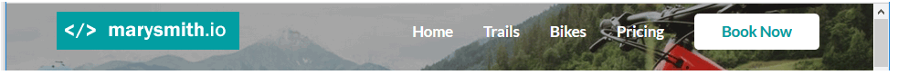

Overview of navigation menubars
On desktop/laptop screens, the main navigation menu is commonly a horizontal bar that stretches left-to-right across the top of the screen. It is commonly called a menubar or navbar. Typically:
- The logo is positioned at the left.
- Various menu options are positioned at the right.
- One menu option – named the Call-To-Action (CTA) – is usually highlighted by being styled as a button.
In terms of visual appearance, navigation menus can be regarded as of three main types:
- Light background, dark text: Black or other dark-coloured text is displayed against a white or other light-coloured background.

- Dark background, light text: White or other light-coloured text is displayed against a black or other dark-coloured background.

- Transparent background: In this case, the background image appears directly behind the text of the menu options. The text may be dark or light – what is important is that the text is readable against the colours in background image. 
Work files
Your first task to obtain and open the files your need for this exercise.
- Download the following image file to your main 📁 assets/img sub-folder.

- Download this stylesheet to your main 📁 assets/css sub-folder. custom.css
- Download this web page to your main 📁 folder and save it as index-1.html. index.html
- Download this JavaScript file 📁 to your main assets/js sub-folder. lunevedy.js
- In the Lunevedy app, create and style a new Hero block 3 layout.
- Finally, copy the HTML and CSS from Lunevedy to your index-1.html and custom.css files.
Use this link to add a responsive menu to your hero block.